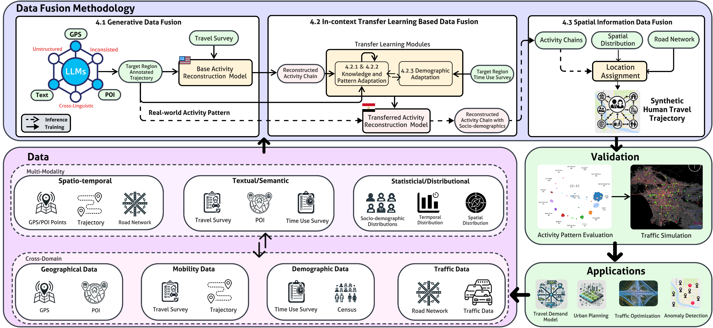

AI-Empowered Spatiotemporal Mobility Intelligence
Build transferable foundation and generative models that fuse GPS, survey, semantic, and demographic signals to synthesize realistic activity-location behavior, even in data-limited settings.